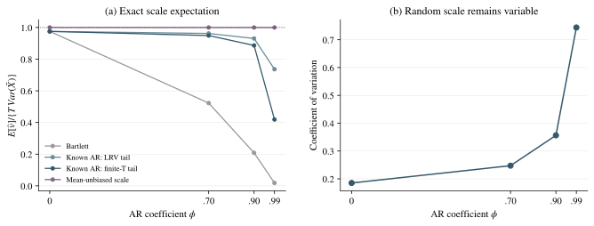
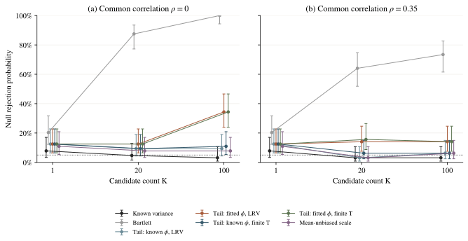
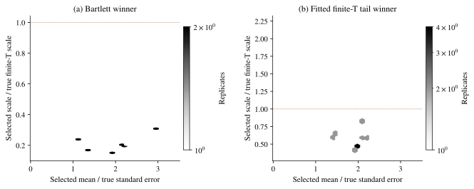

有限样本尺度、尾部修正与策略筛选
流程检查：每格只有 64 轮，不用于研究结论。
这里复现 Liu–Chan 的固定带宽 AR(1) 尾部修正公式，并将总体截断、有限样本中心化、参数拟合与候选筛选分开诊断。修正估计量的期望，不等于校准随机分母统计量的尾部。
本报告没有使用未知参数的可实施联合临界值，未复现作者的自动带宽实验，也未建立新方法的普遍有效性。已知参数与均值无偏参照用于辨认误差来源。
1. 偏差修正与随机尺度



2. 策略筛选后的误报



3. 被选候选的尺度



完整零均值结果
数值下方为点态 95% Monte Carlo 区间；行标题可下载该格点的逐轮记录。成对拒绝差异另存，未经多重比较调整，不用于确认性显著声明。
| 生成模型 | 真实方差 | Bartlett | 已知 φ·LRV | 估计 φ·LRV | 已知 φ·有限 T | 估计 φ·有限 T | 均值无偏参照 |
|---|---|---|---|---|---|---|---|
| T=200, φ=0.0000 K=1, ρ=0.0 | 3.12%0.86–10.70 | 3.12%0.86–10.70 | 3.12%0.86–10.70 | 3.12%0.86–10.70 | 3.12%0.86–10.70 | 3.12%0.86–10.70 | 3.12%0.86–10.70 |
| T=200, φ=0.7000 K=1, ρ=0.0 | 10.94%5.40–20.90 | 15.62%8.71–26.43 | 7.81%3.38–17.02 | 7.81%3.38–17.02 | 7.81%3.38–17.02 | 7.81%3.38–17.02 | 6.25%2.46–15.00 |
| T=200, φ=0.9000 K=1, ρ=0.0 | 6.25%2.46–15.00 | 29.69%19.91–41.77 | 12.50%6.47–22.77 | 15.62%8.71–26.43 | 12.50%6.47–22.77 | 17.19%9.88–28.21 | 12.50%6.47–22.77 |
| T=200, φ=0.9900 K=1, ρ=0.0 | 7.81%3.38–17.02 | 46.88%35.18–58.93 | 18.75%11.06–29.97 | 28.12%18.59–40.13 | 23.44%14.75–35.13 | 29.69%19.91–41.77 | 10.94%5.40–20.90 |
| T=512, φ=0.9000 K=1, ρ=0.0 | 7.81%3.38–17.02 | 20.31%12.27–31.71 | 12.50%6.47–22.77 | 12.50%6.47–22.77 | 12.50%6.47–22.77 | 12.50%6.47–22.77 | 10.94%5.40–20.90 |
| T=512, φ=0.9000 K=20, ρ=0.0 | 4.69%1.61–12.90 | 87.50%77.23–93.53 | 9.38%4.37–18.98 | 12.50%6.47–22.77 | 9.38%4.37–18.98 | 12.50%6.47–22.77 | 7.81%3.38–17.02 |
| T=512, φ=0.9000 K=100, ρ=0.0 | 3.12%0.86–10.70 | 100.00%94.34–100.00 | 9.38%4.37–18.98 | 34.38%23.92–46.60 | 10.94%5.40–20.90 | 34.38%23.92–46.60 | 7.81%3.38–17.02 |
| T=512, φ=0.9000 K=20, ρ=0.35 | 3.12%0.86–10.70 | 64.06%51.82–74.71 | 3.12%0.86–10.70 | 14.06%7.58–24.62 | 6.25%2.46–15.00 | 15.62%8.71–26.43 | 3.12%0.86–10.70 |
| T=512, φ=0.9000 K=100, ρ=0.35 | 3.12%0.86–10.70 | 73.44%61.52–82.70 | 6.25%2.46–15.00 | 14.06%7.58–24.62 | 6.25%2.46–15.00 | 14.06%7.58–24.62 | 6.25%2.46–15.00 |
| T=256, φ=0.9375 K=20, ρ=0.35 | 1.56%0.28–8.33 | 73.44%61.52–82.70 | 7.81%3.38–17.02 | 28.12%18.59–40.13 | 12.50%6.47–22.77 | 28.12%18.59–40.13 | 6.25%2.46–15.00 |
| T=1024, φ=0.9688 K=20, ρ=0.35 | 3.12%0.86–10.70 | 84.38%73.57–91.29 | 14.06%7.58–24.62 | 21.88%13.50–33.43 | 14.06%7.58–24.62 | 23.44%14.75–35.13 | 9.38%4.37–18.98 |
| T=2048, φ=0.9779 K=20, ρ=0.35 | 1.56%0.28–8.33 | 76.56%64.87–85.25 | 6.25%2.46–15.00 | 7.81%3.38–17.02 | 6.25%2.46–15.00 | 9.38%4.37–18.98 | 6.25%2.46–15.00 |